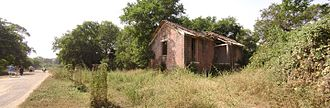

Meet the master
Learn more about the father of modern Indian art

Raja Ravi Varma was an Indian painter and artist. He is considered among the greatest painters in the history of Indian art. His works are one of the best examples of the fusion of European academic art with a purely Indian sensibility and iconography. Specially, he was notable for making affordable lithographs of his paintings available to the public, which greatly enhanced his reach and influence as a painter and public figure. His lithographs increased the involvement of common people with fine arts and defined artistic tastes among common people. Furthermore, his religious depictions of Hindu deities and works from Indian epic poetry and Puranas have received profound acclaim. He was part of the royal family of erstwhile Parappanad, Malappuram district. Raja Ravi Varma was closely related to the royal family of Travancore of present-day Kerala state in India. Later in his life, two of his granddaughters were adopted into that royal family, and their descendants comprise the totality of the present royal family of Travancore, including the latest three Maharajas (Balarama Varma III, Marthanda Varma III and Rama Varma VII).
Influences and Inspirations
Dive deeper into his artistic profession
 The studio used by Varma during his stay at the Laxmi Vilas Palace
Varma was patronised by Ayilyam Thirunal, the next Maharaja of Travancore and began formal training thereafter.He learned the basics of painting in Madurai. Later, he was trained in water painting by Rama Swami Naidu and rather reluctantly in oil painting by (Dutch or Danish) portraitist Theodore Jenson. The British administrator Edgar Thurston was significant in promoting the careers of Varma and his brother.Varma received widespread acclaim after he won an award for an exhibition of his paintings at Vienna in 1873. Varma's paintings were also sent to the World's Columbian Exposition held in Chicago in 1893 and he was awarded three gold medals. He travelled throughout India in search of subjects. He often modelled Hindu Goddesses on Indian women, whom he considered beautiful. Ravi Varma is particularly noted for his paintings depicting episodes from the story of Dushyanta and Shakuntala, and Nala and Damayanti, from the Mahabharata. Ravi Varma's representation of mythological characters has become a part of the Indian imagination of the epics. He is often criticized for being too showy and sentimental in his style but his work remains very popular in India. Many of his fabulous paintings are housed at Laxmi Vilas Palace, Vadodara.
Iconic paintings by Raja Ravi Varma
Explore Raja Ravi Varma's art
-

Shakuntala looking for Dushyanta
-

Galaxy of Musicians
-

Nair Lady Adorning Her Hair
-

There Comes Papa